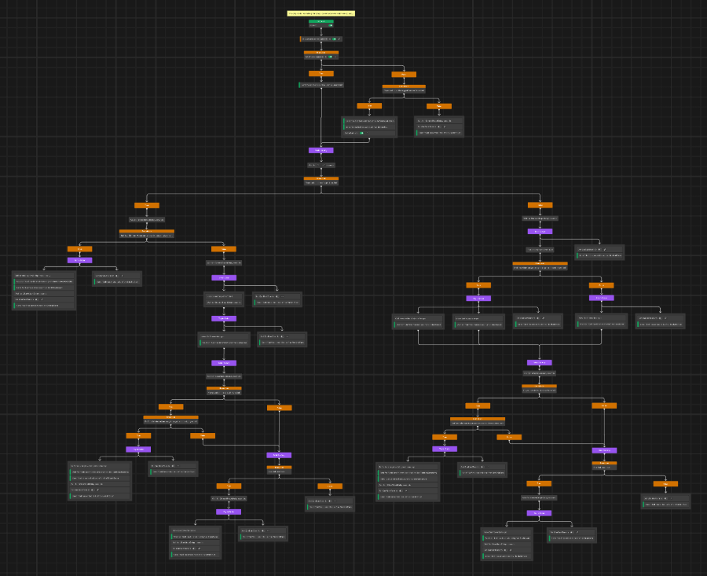

Prototype turn-based strategy game where you control mutated human weapons on their path to destroy their creators.

Created in: 2025
Platform: Windows
Engine: Unity
My responsibilities

Project
Bellum Corpus is a prototype turn-based strategy game where the player controls mutated human weapons that
have turned on their former allies.
The project is built with Unity 6 High Definition Render Pipeline (HDRP).
In this project my main responsibilities were:
Key features
Enemy AI
I created the enemy AI using Unity's Behavior package. Unity Behavior is a graphical tool and it's based on
behaviour trees. In addition to the premade nodes and functionality, you can create your own nodes with C#.
I created three different enemy types that prioritize different target types. One prioritizes player units
it has the highest accuracy to, another targets units with lowest HP and as a fun side personality I made one
enemy type focus only on a single target and hunt it relentlessly.
